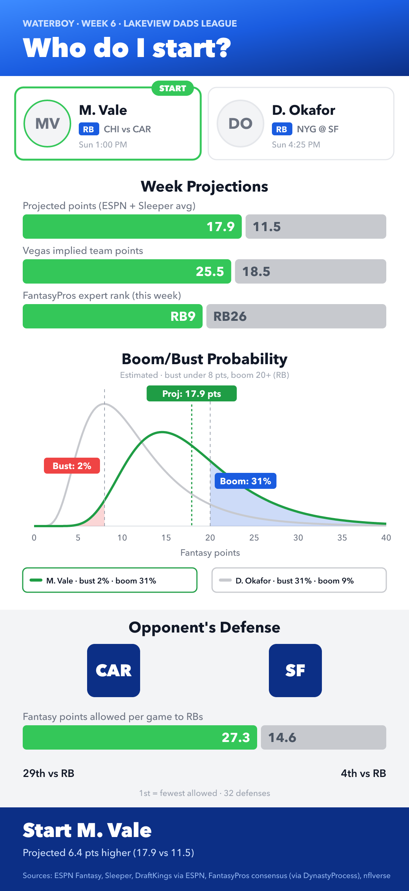
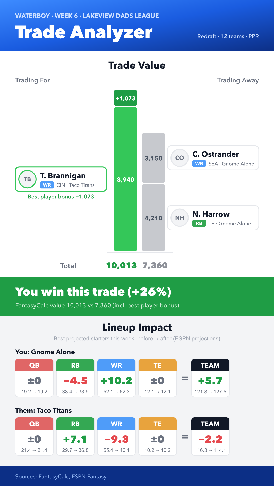
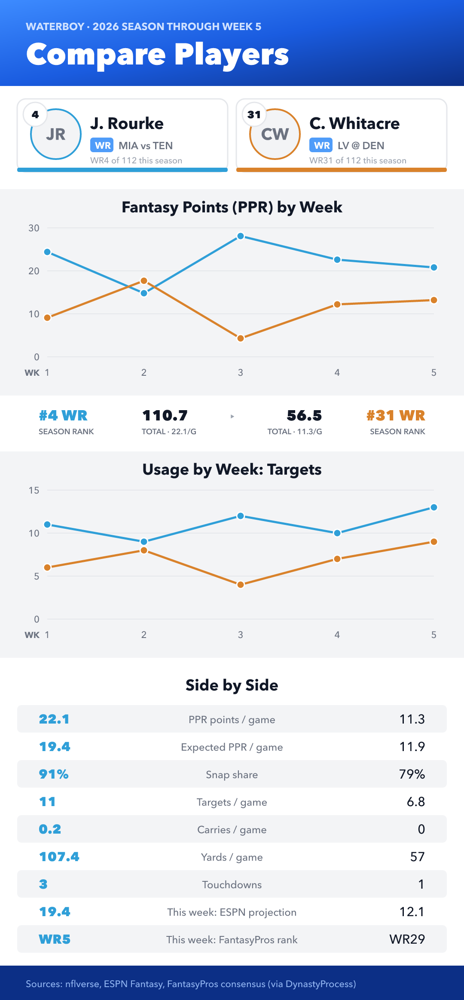

Fantasy football · iMessage · your Mac
Your fantasy football assistant, one iMessage away.
Text Waterboy from your phone or your league's group chat. It runs on your Mac, uses your Claude or ChatGPT, and answers with real data from ESPN, Sleeper and nflverse.
- Free and open source (MIT)
- No server, no account
- macOS 12 or later
Mikewaterboy who should I start, Vale or Okafor?
WaterboyStart Marcus Vale. 17.9 projected vs 11.5, a 25.5-point Vegas total, and Carolina gives up the most points to running backs. Okafor's at San Francisco.

trust the waterboy 💧
New in 0.3 A setup walkthrough from download to first reply, updates that install themselves, and a heads-up if macOS stops letting it send. Coming in 0.4: usage tracking, playoff odds and weekly awards.
What changedAsk
Ask it anything your league argues about.
Waiver pickups, start/sit, trade value, matchup previews. Waterboy looks at your actual roster and this week's projections before it answers.
- Your ESPN league: rosters, matchups, standings
- Sleeper projections and trends, nflverse usage, betting lines
- Remembers who's who in the chat and which team is theirs
who's the best RB on waivers this week?
WaterboyJalen Pruitt (TEN). Took 64% of snaps after the injury ahead of him, 14 touches last week, and plays the 29th-ranked run defense. He's on 18% of rosters, so put in a $9 claim before Wednesday.
and if he's gone?
WaterboyNext up: Corey Bram (NYG), 11 touches and goal-line work. Lower ceiling, safer floor.
Show
Answers you can screenshot.
Start/sit calls, trades and player comparisons come with a card made for the group chat: the numbers side by side, and the verdict on top.
- Start/sit: projections, matchup, usage trend
- Trades: value in and out, and your lineup before and after
- Comparisons: a season side by side


Follow
It shows up on Tuesday, so you don't have to.
When the last game of the week is final, Waterboy posts the roundup: results, standings, the playoff line and the highlights. During games, it can text you when your matchup swings.
- Weekly roundup built from ESPN data, posted once every game is final
- Playoff odds and weekly awards (shown here) arrive in 0.4
- Live alerts when your projected score moves
- Your own schedules too: "every Thursday at 6, preview my matchup"
WaterboyWeek 5 is final 🏁
Gridiron Gurus 132.4 – 98.1 Taco Tuesday
Couch Coaches 104.6 – 104.2 Sunday Scaries
Standings
1. Gridiron Gurus 5-0 · 97%
2. Couch Coaches 4-1 · 81%
3. Fourth & Long 3-2 · 58%
🏆 High score: Gridiron Gurus 132.4
😬 Bench blunder: Taco Tuesday left 31.2 on the bench
🍀 Lucky win: Couch Coaches, by 0.4
Group chat
Built for the group chat.
Add it to your league's thread and mention it by name when you want it. It knows which team belongs to whom, so "my matchup" works for everyone.
- Answers only when it's called by name
- "Fantasy only" people get the league tools and nothing else
- Admins can pause it with /pause
Kathywaterboy how's my matchup looking?
WaterboyKathy, Fourth & Long is projected 118.6 to 111.0 over Sunday Scaries. Your edge is at WR; their kicker's in a dome.
Devwaterboy and mine?
WaterboyDev, it's close: Taco Tuesday 101.4, Couch Coaches 103.9. Starting Pruitt over Hale would flip it.
Privacy
No server in the middle. Only the message it's answering leaves your Mac.
There's no Waterboy server and no account. It reads Messages on your Mac and only sends the conversation it's answering to your AI provider.
Runs where your messages are
A small service on your Mac watches Messages and replies through it. Close the app and it keeps working; it starts with your Mac.
Only chats you allow
Waterboy ignores every conversation you haven't allowed. In groups it answers only when it's called by name.
Free data, no sign-ups
ESPN, Sleeper, nflverse, FantasyPros and FantasyCalc are public. Private ESPN leagues need two cookies, kept on your Mac.
Why not the Mac App Store? Apps there can't read the Messages database, and that's how Waterboy sees new texts. So it's signed and notarized by Apple and downloaded from GitHub instead.
Install
On your Mac in a few minutes.
Download
Pick Apple silicon or Intel.
Drag to Applications
Open the DMG, drag Waterboy in, then open it.
Follow the setup
Full Disk Access and Messages permissions, Claude or ChatGPT sign-in, your first chat and your ESPN league.
Text it
From an allowed chat, say hi. In a group, start with "waterboy".
Each release lists SHA-256 checksums. Updates install themselves from the app.
Best setup: give Waterboy its own Apple Account on a Mac that stays on, then text it like any other contact. It ignores messages sent from the account it runs on, because those look like its own replies. Why?
FAQ
Questions
Does my Mac need to stay on?
Yes. Waterboy answers from your Mac, so it needs to be awake and signed in to Messages. A Mac mini or a laptop that stays plugged in works well.
Do I need a paid Claude or ChatGPT plan?
For Claude, you need a Claude Pro or Max plan. For ChatGPT, any account works, including the free plan. Waterboy uses your own sign-in, so busy group chats count against your plan's usage limits.
Which leagues work?
ESPN leagues today, public or private. Sleeper and Yahoo are on the roadmap.
What does it cost?
Waterboy is free and open source. The only cost is your AI plan, and every data source it uses is free.
Can my league-mates use it without a Mac?
Yes. Only the person who runs it needs a Mac. Everyone else just texts it from their iPhone or the group chat.